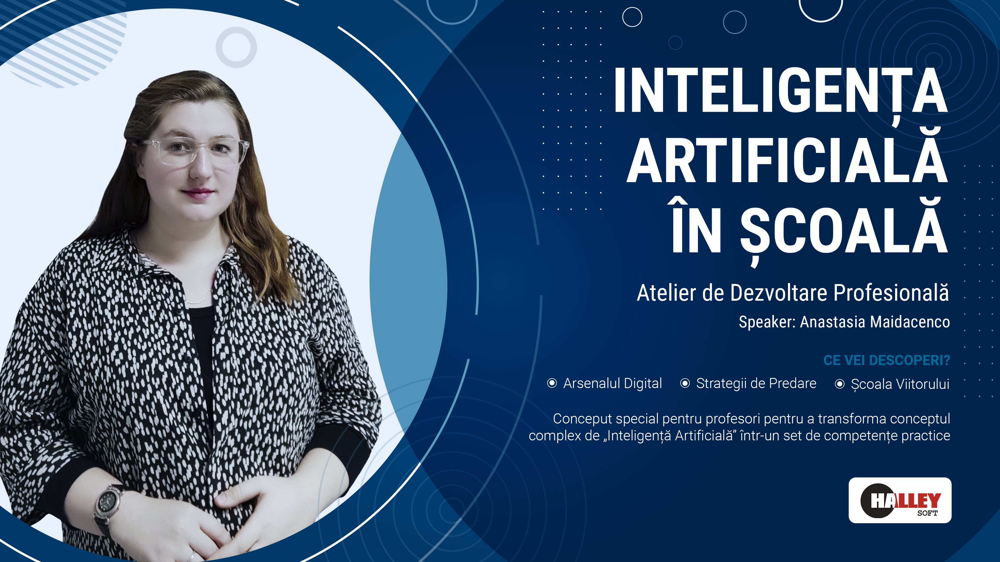

Deschidere si context 2026
Rolul AI in educatie, asteptari realiste si obiectivele atelierului.
Atelier de dezvoltare profesională
Un workshop aplicat pe scenarii reale: proiectare de lectii, evaluare, automatizare, prompt engineering, etica și securitate digitala.
Programul evenimentului
Rolul AI in educatie, asteptari realiste si obiectivele atelierului.
Ce este nou in 2026: asistenti multimodali, fluxuri rapide si lucru bazat pe surse.
Formule eficiente pentru lectii de algoritmica, Python, C/C++ si proiecte software.
GPT, Claude, Gemini, Perplexity, NotebookLM si scenarii concrete de predare.
Integritate academica, protectia datelor elevilor si bune practici pentru utilizare responsabila.

Speaker / Bio
IT Specialist
Specialist in C/C++, Python pentru Data Science, AI si dezvoltarea sistemelor complexe. Experiența in proiecte educaționale, traininguri pentru profesori si integrarea AI in curriculum. Pasionată de transformarea digitala a educatiei si promovarea utilizarii responsabile a tehnologiei in școli.
Rolul profesorului în era AI
În era inteligenței artificiale, misiunea profesorului nu dispare — ea se transformă profund. Nu mai ești doar furnizor de informație, ci ghid al gândirii critice, mentor al utilizării responsabile a tehnologiei și facilitator al învățării profunde. AI poate genera conținut, dar nu poate forma caracterul sau cultiva curiozitatea.
Proiectezi lecții care nu pot fi înlocuite de un chatbot: dezbateri, experimente, colaborare reală, reflecție. AI devine un instrument în mâna profesorului, nu un rival.
Elevii au nevoie să vadă cum gândești, nu doar ce știi. Cum verifici o sursă, cum formulezi o întrebare bună, cum recunoști o eroare — acestea rămân apanajul profesorului.
Integritate academică, empatie, responsabilitate digitală — valori pe care nicio rețea neuronală nu le poate preda. Profesorul rămâne busola morală a clasei.
Leagă cunoașterea abstractă de contextele concrete din viața elevilor. Relevanța și motivația personală nu pot fi automatizate.
Smartphone-urile, videoclipurile scurte și notificările continue au recablat creierul elevilor pentru gratificare imediată. Iată strategii dovedite pentru a menține atenția și motivația:
Sparge activitățile mari în sarcini de 5–10 minute cu rezultate vizibile. Creierul elevilor are nevoie de feedback rapid — AI poate genera exerciții scurte și personalizate pe loc.
Conectează fiecare lecție la un „de ce contează azi". Elevii motivați intern înlocuiesc disciplina externă cu autodisciplina. AI ajută la generarea de exemple actuale și contexte reale.
Oferă alegere în cadrul structurii: ce problemă să rezolve, ce instrument să folosească, cum să prezinte soluția. Autonomia crește motivația intrinsecă și face elevul proprietarul procesului.
Stabilește împreună cu elevii când este permis AI, când nu și cum se citează contribuția lui. Claritatea regulilor reduce anxietatea și comportamentul evitant.
Rezultate workshop
reducere potentiala a timpului pentru sarcini repetitive de pregatire si evaluare
prompturi reutilizabile pentru algoritmi, debugging, proiecte si evaluari
continut concentrat pentru profesori de informatica, fara teorie inutila
Creezi explicatii mai clare pentru concepte dificile: recursivitate, complexitate, structuri de date.
Generezi rubrici, mini-teste si feedback diferentiat pentru elevi cu niveluri diferite.
Transformi ora de informatica in activitati de tip laborator, simulare si rezolvare colaborativa.
Aplici reguli clare pentru utilizarea responsabila a AI, citare, verificare si protectia datelor.
Resurse
Ajuta-ne sa imbunatatim urmatoarele editii ale atelierului.
Trimite feedback in Google FormsPrompt engineering
Esti profesor de informatica. Creeaza o lectie de 45 de minute pentru clasa a 9-a despre structuri repetitive in Python. Include obiective, exemplu explicat pas cu pas, 3 exercitii graduale si barem scurt.
Esti mentor de algoritmica. Explica elevilor de clasa a 7-a notiunea de algoritm folosind 2 analogii simple, apoi propune 5 probleme usoare cu rezolvari orientative.
Creeaza o activitate de laborator de 30 minute despre liste si dictionare in Python, cu date de intrare, output asteptat, 3 niveluri de dificultate si criterii de evaluare.
Genereaza 4 exercitii progresive despre vectori in C++, fiecare cu explicatie a complexitatii, capcane frecvente si varianta optimizata.
Analizeaza codul de mai jos, identifica erorile logice, propune corectii minime, explica pas cu pas rationamentul pentru elevii de clasa a 10-a.
Creeaza un plan de proiect pe 4 saptamani pentru o aplicatie simpla de gestionare a bibliotecii, cu roluri pe echipa, milestone-uri si rubrici de evaluare.
Construieste o dezbatere de 20 minute despre utilizarea AI la teme: beneficii, riscuri, reguli de citare si exemple de utilizare responsabila.
Verifica orice rezultat generat de AI, evita incarcarea datelor sensibile despre elevi, solicita transparenta asupra contributiei reale a elevului, foloseste AI ca asistent didactic, nu ca inlocuitor al gandirii critice.
Metodologie practică
Un prompt bun nu este o întrebare simplă — este o instrucțiune structurată. Diferența dintre un rezultat mediocru și unul excelent stă în cum formulezi cererea.
Prompt slab
„Fă-mi o lecție despre recursivitate."
Lipsesc: nivelul clasei, durata, formatul, obiectivele, limbajul de programare.
Prompt bun
„Ești profesor de informatică. Creează o lecție de 45 de minute despre recursivitate pentru clasa a 11-a, profil real. Include: obiective SMART, o analogie din viața reală, 2 exemple de cod în C++ cu comentarii, 3 exerciții cu dificultate progresivă și un barem scurt. Evită termenii tehnici fără explicații."
Include: rol, obiectiv, context, format, constrângeri, nivel de limbaj.
Spune AI-ului ce expert să fie: „Ești profesor de informatică cu 10 ani experiență la liceu…". Rolul calibrează tonul, vocabularul și profunzimea răspunsului.
Descrie exact ce vrei: „Creează…", „Explică…", „Generează 5…", „Compară…". Fii specific cu numărul de itemi, lungimea și formatul (tabel, listă, paragraf).
Oferă detalii relevante: clasa, nivelul elevilor, tema din curriculum, limbajul de programare, durata activității, resursele disponibile.
Limitează răspunsul: „Fără jargon avansat", „Maximum 300 de cuvinte", „Doar în română", „Nu folosi biblioteci externe". Constrângerile salvează timp la editare.
„Rezolvă această problemă pas cu pas, explicând fiecare decizie de design pentru un elev de clasa a 10-a care nu cunoaște recursivitatea."
„Generează întrebări de test. Exemple de stil dorit: [Exemplu 1] [Exemplu 2]. Acum creează 5 întrebări similare despre sortare."
„Rezultatul anterior este prea avansat. Simplifică pentru elevi de gimnaziu, păstrează structura dar înlocuiește termenii tehnici cu analogii vizuale."
„Verifică materialul de mai jos pentru acuratețe factică, adecvare pedagogică și respectarea curriculumului moldovenesc de informatică clasa a 9-a."
Ghid complet 2026
16 instrumente esențiale pentru profesori, cu descriere și link direct. Alege în funcție de nevoile tale didactice.
| Instrument | Ce face / Caracteristici principale | Link |
|---|---|---|
| Claude | LLM puternică de la Anthropic. Excelentă pentru analiza documentelor lungi, generare de cod și idei creative. | anthropic.com/claude |
| Gemini | Model multimodal de la Google DeepMind (text, imagini, audio, video). Versiuni: Ultra, Pro, Flash, Nano. | gemini.google.com |
| GPT (OpenAI) | Cea mai populară serie de modele lingvistice (GPT-3.5, GPT-4, GPT-4o). Util pentru chatboturi, cod și redactare. | chat.openai.com |
| Grok (xAI) | Asistent cu acces la internet în timp real, scriere de cod, generare de media. | x.ai |
| DeepSeek | LLM chinez open-source. Mai eficient și accesibil decât alternativele, cu calitate ridicată. | deepseek.com |
| Qwen (Alibaba) | Modele lingvistice open de la Alibaba Cloud. Puncte forte: raționament și generare de conținut. | qwen.ai |
| Perplexity | Motor de căutare de nouă generație: caută pe internet și răspunde cu surse citate, în timp real. | perplexity.ai |
| z.ai | Chat AI focusat pe asistenți prietenoși și fluxuri productive. Simplu și rapid de utilizat. | chat.z.ai |
| Nano Banana | Editor de imagini powered by Google Gemini 2.5 Flash. Menține trăsăturile persoanelor, schimbă fundalul și îmbrăcămintea. | nanobanana.app |
| Krea | Instrument pentru generare de imagini și animații cu prompturi text în timp real. | krea.ai |
| HeyGen | Platformă video cu avatare, voci sintetice și traducere automată. Ideal pentru lecții și prezentări. | heygen.com |
| Gamma AI | Creează prezentări, pagini web și documente din text. Design profesional generat automat. | gamma.app |
| Kimi (Moonshot AI) | Chatbot puternic de la Moonshot AI. Suport pentru contexte uriașe, răspunsuri rapide. | kimi.com |
| NotebookLM (Google) | Asistent AI pentru studiu: generează rezumate, fișe și teste din documentele tale proprii. | notebooklm.google |
| Replit | IDE online cu asistent AI integrat pentru programare. Suport pentru zeci de limbaje, direct din browser. | replit.com |
| Lovable | Platformă pentru crearea aplicațiilor „după descriere": generează automat frontend, backend și baza de date. | lovable.dev |
Generare imagini cu AI
Nano Banana este un editor de imagini powered by Google Gemini 2.5 Flash. Poți schimba fundalul, îmbrăcămintea sau contextul unei fotografii, păstrând trăsăturile feței și identitatea persoanei. Perfect pentru material didactic, prezentări și postere profesionale.
Deschide nanobanana.app în browser. Nu necesită instalare sau cont obligatoriu.
Apasă „Upload" și selectează o fotografie de pe dispozitivul tău (format JPG sau PNG).
Scrie ce vrei să schimbi: „Pune un fundal de clasă modernă", „Adaugă o jachetă albastră", „Transformă în ilustrație vectorială". Gemini înțelege instrucțiunile în română.
Gemini 2.5 Flash păstrează trăsăturile feței, expresia și proporțiile corpului. Modifică doar elementele descrise în prompt.
Apasă „Download" pentru a salva imaginea. Poți continua cu prompturi noi pentru a rafina rezultatul.
Creează fotografii profesionale pentru profiluri. Generează ilustrații pentru fișe de lucru, postere tematice sau avatare pentru prezentări și site-uri școlare.
Creare materiale didactice cu AI
NotebookLM de la Google transformă documentele tale în materiale didactice interactive — rezumate, fișe de studiu, teste și podcast-uri audio generate automat din PDF-uri, Google Docs sau pagini web.
Contul Google este suficient. Creează un Notebook nou pentru fiecare subiect sau clasă.
Importă PDF-uri, Google Docs, link-uri web sau videoclipuri YouTube. NotebookLM lucrează exclusiv cu sursele tale — nu inventează informații.
Cere rezumate, fișe de termeni cheie, liste de întrebări, planuri de lecție sau explicații ale conceptelor dificile.
Cu un click, NotebookLM generează un podcast de tip dezbatere între doi vorbitori sintetici care discută materialul tău. Util pentru recapitulare acasă.
Extensia Chrome NotebookLM Quiz Exporter extrage testele generate de NotebookLM și le exportă în format compatibil cu Quizlet sau Wayground.
Caută „NotebookLM Quiz Exporter" în Chrome Web Store și adaugă extensia în browser. Încă o extensie bună este NotebookLM Ultra Exporter , care exportă date in mai multe formate.
Cere: „Creează un test cu 10 întrebări cu variante de răspuns despre [subiect]".
Apasă iconița extensiei → Export → Alege Quizlet sau Wayground. Testul apare gata de utilizat în platforma aleasă.
Responsabilitate digitală
Utilizarea AI în educație ridică întrebări etice complexe pe care profesorul modern trebuie să le cunoască, să le discute cu elevii și să le abordeze proactiv în clasă.
AI poate scrie teme, eseuri sau rezolva probleme de programare. Cum distingem munca elevului de output-ul AI? Soluție: proiecte orale, procese documentate, reflecții personale și evaluări în clasă.
Nu introduce date personale ale elevilor (nume, vârstă, rezultate) în chatbot-uri publice. Datele trimise la servere externe pot fi stocate și utilizate pentru antrenare. Folosește date anonimizate.
Modelele AI sunt antrenate pe date istorice care conțin prejudecăți. Ele pot reproduce stereotipuri de gen, rasă sau cultură. Verifică critic orice material generat înainte de a-l folosi în clasă.
Utilizarea excesivă a AI poate reduce capacitatea elevilor de a gândi independent și de a rezolva probleme fără asistență digitală. Impune zone „AI-free" în curriculum.
Conținutul generat de AI poate reproduce fragmente din opere protejate. Imaginile AI pot semăna cu stilul unor artiști vii. Educă elevii despre citare, atribuire și drepturile digitale.
Elevii și părinții au dreptul să știe când AI este folosit în procesul educațional. Declară utilizarea AI în materiale, evaluări și feedback. Transparența construiește încredere.
Nu toți elevii au acces la internet rapid, dispozitive performante sau conturi premium AI. Proiectează activități care pot funcționa și fără AI sau cu versiuni gratuite.
Modelele AI produc uneori informații false cu o încredere aparentă. Antrenează elevii să verifice orice afirmație AI folosind surse primare și să nu accepte răspunsuri fără gândire critică.
Folosește AI ca pe un asistent inteligent, nu ca pe un oracol infailibil. Verifică, adaptează, personalizează. Responsabilitatea pedagogică rămâne a ta.
{kind=link}